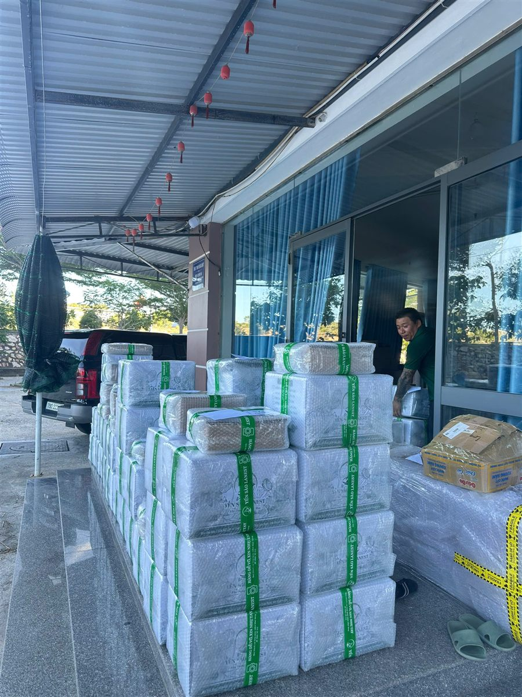
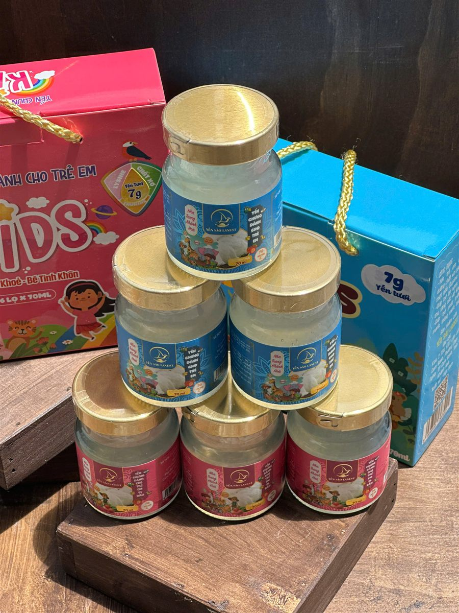

Đại Lý Yến Chuẩn Bị Mùa Tết: Nhập Hàng, Chọn Dòng Sản Phẩm Và Lên Kế Hoạch Từ Sớm
Yến Sào Lanest · Đăng ngày 11/11/2026

Với người bán yến, Tết không bắt đầu vào tháng Chạp mà bắt đầu từ lúc mình ngồi tính nhập hàng yến Tết: nhập dòng nào, vị nào, hộp nào, nhập lúc nào để hàng về kịp mà không ôm tồn. Bài này là bảng việc cho đại lý muốn chuẩn bị mùa Tết bài bản, từ chia nhóm khách, chọn hàng, lên lịch nhập, cất kho tới chuẩn bị giấy tờ để bán cho tự tin.
Thùng hàng quấn băng keo Yến Sào Lanest xếp trước công ty, chờ lên xe đi các đại lý
1. Vì sao phải tính hàng Tết từ bây giờ
Người làm yến lâu năm đều biết nghề này có mùa. Người sáng lập Lanest nói về quãng cuối năm:
"Thời điểm này là thời điểm vàng để bán hàng."
Ở Lanest, từ tháng 8 tới cuối năm là quãng bán chạy nhất. Tết Đinh Mùi năm nay rơi vào ngày 6/2/2027, nên từ giờ tới Tết còn khoảng ba tháng. Nghe thì dài, nhưng trừ đi thời gian chọn mẫu, chụp ảnh đăng bán, chờ hàng đi đường và những ngày cận Tết nhà xe nghỉ, quỹ thời gian còn lại không nhiều. Đại lý tính sớm thì chủ động chọn hàng; đại lý tính muộn thì thường chỉ còn lấy được thứ đang có sẵn.
2. Chia khách của mình thành từng nhóm trước khi nhập
Đừng nhập theo cảm giác "Tết thì cái gì cũng bán được". Nhìn lại danh sách khách năm ngoái, chia thành vài nhóm rồi chọn dòng hàng cho từng nhóm:
| Nhóm khách | Dòng hàng nên chuẩn bị |
| Mua về uống trong nhà | Yến hũ chưng sẵn 7g yến tươi, nhiều vị để khách đổi vị |
| Mua biếu ông bà, họ hàng | Hộp quà đỏ, hộp quà xanh nhiều hũ; hộp trẻ em 6 hũ cho nhà có bé |
| Mua biếu sếp, đối tác cần quà chỉn chu | Hộp đỏ dòng tổ yến chưng nguyên chất 100%, mỗi hũ 1,5g tổ yến |
| Quen tự chưng yến ở nhà | Yến tinh chế hộp 50g, 100g |
| Công ty đặt quà số lượng | Hộp quà đồng loạt; hỏi trước chuyện hóa đơn |
Nhóm khách công ty có cách chuẩn bị riêng, anh chị xem thêm bài quà Tết yến sào cho doanh nghiệp để biết người đặt quà thường hỏi gì.
3. Chọn vị yến hũ: bắt đầu từ vị chắc bán
Yến hũ 7g của Lanest có 14 vị, nhưng đại lý không cần ôm đủ cả 14 ngay từ đợt đầu. Vài điểm để chọn:
- Đường phèn là vị bán chạy nhất của Lanest, nên là vị nền của mọi đơn.
- Trộn được nhiều vị trong cùng một đơn hàng. Đợt đầu nhập vài vị chủ lực để xem khu mình chuộng vị nào, đợt sau bổ sung đúng vị đang chạy.
- Vị đường ăn kiêng, đông trùng hạ thảo đường ăn kiêng cho khách đang hạn chế đường. Khi tư vấn chỉ nói đúng như vậy, và nhắc người đang điều trị bệnh hỏi bác sĩ trước khi dùng.
- Vị trẻ em, trẻ em vị dâu cho gia đình có con nhỏ, đi cùng hộp trẻ em 6 hũ.
Muốn tư vấn đúng thì phải đọc kỹ thành phần trên nhãn của từng dòng: dòng 7g và dòng nguyên chất 100% có thành phần khác nhau, đừng nói gộp. Cách đọc có trong bài cách đọc nhãn yến hũ, còn gợi ý từng vị ở bài 14 vị yến chưng, chọn vị nào.
4. Hộp quà: xem mẫu thật của mùa này trước khi đăng bán
Lanest thường xuyên đổi mẫu hộp, nên mẫu Tết năm nay có thể khác ảnh anh chị lưu từ năm trước. Trước khi chụp ảnh đăng bán hay báo khách, nên hỏi Lanest mẫu hộp nào đang có, mỗi hộp mấy hũ, phối vị ra sao. Đừng nhận đặt trước một mẫu mình chưa chắc còn làm.
Đi kèm hộp còn có phụ kiện như túi xách, vỏ hộp rời cho từng hũ và thiệp chúc để khách ghi lời gửi. Với khách mua biếu, mấy món nhỏ này giúp món quà tròn trịa hơn, anh chị nên tính luôn số lượng khi lên đơn.

Hộp yến trẻ em 6 hũ: một lựa chọn quà Tết cho gia đình có con nhỏ
5. Lên lịch nhập và nhận hàng
Chia hàng Tết làm hai, ba đợt thay vì dồn một lần: đợt đầu nhập vị chủ lực và hộp quà mẫu để chụp ảnh, nhận đặt trước; các đợt sau bổ sung theo số khách đã chốt. Khi tính ngày, nhớ cộng thời gian xử lý và giao hàng theo chính sách đang công bố của Lanest:
- Đơn được xác nhận trong vòng 12 giờ làm việc; đơn xử lý trong giờ hành chính, 08:00–17:30, Thứ 2 đến Thứ 7.
- Cam Ranh, Nha Trang và một số tỉnh có đại lý có thể giao trong ngày; tỉnh khác 2–5 ngày làm việc; tuyến có chành xe thì gửi chành.
- Lịch nghỉ Tết và mốc chốt đơn gửi tỉnh mỗi năm một khác, anh chị hỏi trước qua hotline để không lỡ chuyến cuối.
Lúc nhận hàng, kiểm tem niêm phong, số lượng, hạn sử dụng và bao bì ngay tại chỗ; hàng móp, vỡ, thiếu, sai loại thì có quyền từ chối nhận. Quay video lúc mở thùng và giữ hóa đơn: hàng lỗi do vận chuyển hoặc do nhà sản xuất được đổi trả trong 15 ngày kể từ ngày nhận.
Cất kho cũng là việc của mùa Tết. Yến hũ để nhiệt độ thường, nơi khô ráo, thoáng mát, tránh nắng; hàng nhập trước bán trước, xem hạn in trên bao bì của từng lô. Yến tinh chế hạn dùng 24 tháng kể từ ngày sản xuất khi hộp còn nguyên. Chi tiết ở bài bảo quản yến hũ chưng sẵn.
6. Chuẩn bị giấy tờ, nội dung và giữ giá chung
Mùa Tết khách hỏi nhiều hơn, nhất là khách mua biếu và khách công ty. Chuẩn bị sẵn từ bây giờ:
- Bộ giấy tờ: chứng nhận ISO 22000:2018, bản tự công bố sản phẩm kèm phiếu kiểm nghiệm. Lanest gửi được cho đại lý khi cần.
- Ảnh, video để đăng bán: lấy từ nội dung Lanest đăng trên fanpage, chia sẻ về trang của mình, khỏi phải tự chụp từ đầu.
- Câu trả lời mẫu: mỗi dòng chứa bao nhiêu yến, bảo quản thế nào, đổi trả ra sao. Trả lời nhất quán thì khách tin.
- Giá chung của hệ thống: mọi cộng tác viên, đại lý, nhà phân phối bán đúng giá niêm yết do công ty công bố. Mùa cao điểm càng dễ có người phá giá, giữ giá chung là giữ biên lời cho chính mình.
Câu hỏi thường gặp
Đại lý có phải nhập riêng từng vị yến hũ không?
Không. Lanest cho trộn nhiều vị trong cùng một đơn hàng, nên anh chị có thể nhập vài vị chủ lực để thử trước rồi bổ sung sau.
Đại lý tự chạy khuyến mãi Tết được không?
Chương trình khuyến mãi do công ty triển khai chung cho cả hệ thống. Chính sách bán hàng của Lanest yêu cầu mọi đại lý bán đúng giá niêm yết, anh chị gọi 0258 6278 627 để hỏi chương trình Tết năm nay.
Hạn chót đặt hàng Tết là ngày nào?
Lịch chốt đơn và lịch nghỉ Tết được báo theo từng năm. Anh chị gọi 0258 6278 627 để hỏi lịch năm nay và nhận chính sách đại lý đang áp dụng.